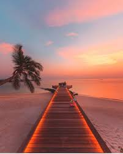

Mes centres d'intérêt, hobbies et projets
Voici 4 domaines qui me tiennent à cœur.
Projet 1 — Site vitrine pour restaurant

Site vitrine fictif pour un restaurant local. Réalisé en HTML et CSS pur. Projet personnel pour pratiquer l'intégration de maquettes.
Photographie

Passion depuis le lycée. J'aime capturer des paysages urbains. J'utilise un Canon EOS et retouche mes photos sous Lightroom.
Basketball

Je joue depuis l'âge de 12 ans. Ce sport m'a appris l'esprit d'équipe et la persévérance.
Jeux vidéo et Game design

Fan de RPG et de jeux de stratégie. J'apprends les bases de Unity pour créer des mini-jeux 2D.